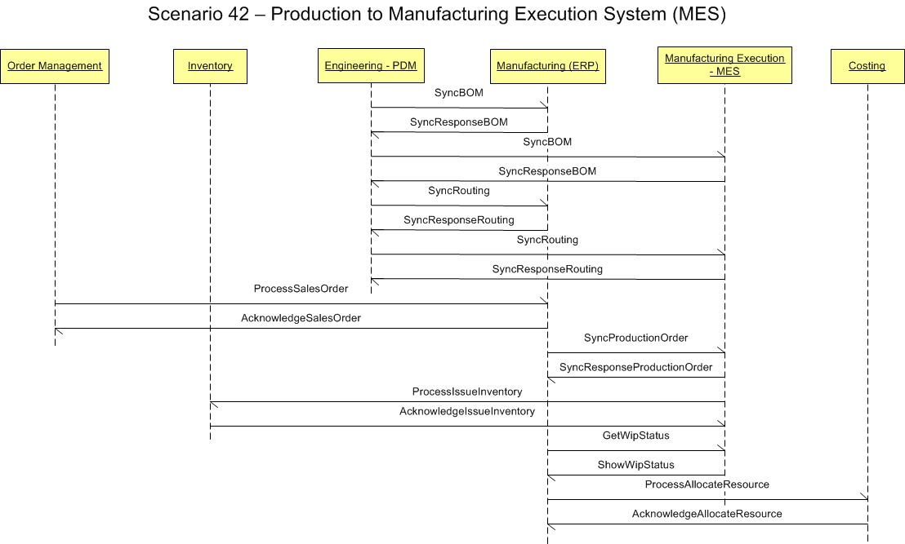

Scenario 42 - Production to Manufacturing Execution System42.0 OverviewScenario #42 describes scenarios which would enable integration of disparate manufacturing systems applications for production execution.The purpose of this scenario is to enable the visualization of the participants in the process and the dialogs between them for this specific integration. This scenario is not meant to be the only model for integrating general ledger applications to a budget applications. This is simply one model that may be used to guide one's own integration efforts. The scenario below shows an integration that involves a manufacturing execution system (MES) and a central ERP system. The MES is shown as the source of production events and activities. The ERP is shown as the source of related setup events which occur prior to production. 42.1 Scenario DiagramThe scenario below contains the participants involved in the interaction, the dialog flows or conversation between them, certain assumptions about the sequence of events, and assumptions about the technical approach, for example, publish and subscribe.This is a model to be used as a design recommendation, not a required approach.  42.2 AssumptionsThis scenario assumes a loosely coupled, asynchronous approach with transaction management required but not explicitly defined.The environment for this first integration is typically within an enterprise and within a division. The environment for this second integration is typically between two enterprises. This scenarios also assume that one application will maintain the master data for the integration. 42.3 Participant DefinitionsThe scenario contains six major application; order management, inventory, engineering (PDM), manufacturing (ERP), manufacturing execution (MES) and costing applications.The definitions and details of these applications are left to the designer but are assumed to contain the functionality as defined by what is commonly sold in the commercial market place today. This definition is broadly accepted by the scenario designers and is a direct result of the decision not to define how the processing takes place within any individual application. Each application must be able perform the services defined by the message BOD (business object document), but the internals of the application are not required or desired to be exposed at this level of standardized abstraction. The most important factors in defining these participants is to ensure that an integration designer can communicate the requirements precisely enough to detail the interfaces needed and their interrelationships. 42.4 Business Workflow (Sequence)The business workflow is graphically represented by starting at the Scenario top and reading from top down and from left to right.The events involved include:
42.5 Exception HandlingException handling is highly localized as the result of an implementation's infrastructure, management and business rules. As such, this section of the Scenario documentation is planned to be used as a guide to help understand the additional intent of these Scenarios. If no exceptions are noted here, then it can be assumed that the Scenario designers agreed that the Scenario is straight forward and has no additional needs:
Copyright OAGi 2017 - All Rights Reserved -- OAGIS release 10.4 - Document Number: 20170501-42 |